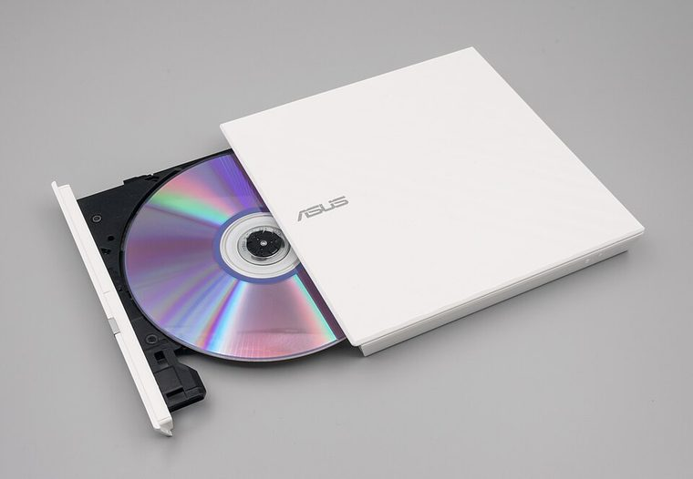

[ INDIVIDUAL COMPONENT // OPTICAL DRIVES ]
ASUS SDRW-08D2S-U
External slim USB 2.0 DVD/CD writer. It is a USB peripheral, not an internal SATA optical drive. Specifications below are tied to the exact model identifiers and cited documentation; nearby product families may differ.

IDENTIFICATION: ASUS SDRW-08D2S-U · confirm full model/revision marking and compare it with the cited source before assigning a host or media capability.
Verified specifications
| Catalog subcategory | External DVD writers |
|---|---|
| Exact product identifier | ASUS SDRW-08D2S-U |
| Era / product type | External slim 8× DVD writer |
| Read/write and media | Writes DVD±R up to 8×, DVD±R DL up to 6×, DVD+RW up to 8×, DVD-RW up to 6×, CD-R and CD-RW up to 24×; reads DVD-ROM/CD-ROM. |
| Interface and mechanics | External slim tray drive; USB 2.0 host connection; 142 × 142 × 20 mm, approx. 250 g (manufacturer specification). USB-powered 5 V design. |
| Variant and host cautions | ASUS specifies USB 2.0 and lists host/OS requirements; a USB port/hub may not provide stable power for every setup. Confirm exact SDRW-08D2S-U rather than SDRW-08D2S-U LITE or other regional bundles, and install compatible recording software. |
Optical-media preservation notes
Do not disconnect during an active write. For preservation burns, log media ID, firmware/software, speed, finalization and a full readback checksum; protect discs from heat, light, scratches and adhesive labels.
- Handle discs by the edge or center hub; do not write on the data side or add adhesive labels over the recording surface.
- Store in a clean, cool, dry, dark environment in protective cases. Keep original media unmodified and make verified working images for access.
- Retain checksums, drive model/firmware, software, read errors, media type, and acquisition/handling history with each preservation image.
Identification and host checks
- Confirm the complete manufacturer label, model suffix, revision, serial/date code, and supplied bezel, cable, adapter, or bracket before installation.
- ASUS specifies USB 2.0 and lists host/OS requirements; a USB port/hub may not provide stable power for every setup. Confirm exact SDRW-08D2S-U rather than SDRW-08D2S-U LITE or other regional bundles, and install compatible recording software.
- Do not disconnect during an active write. For preservation burns, log media ID, firmware/software, speed, finalization and a full readback checksum; protect discs from heat, light, scratches and adhesive labels.
Manufacturer, standards and preservation sources
- ASUS — SDRW-08D2S-U official tech specsManufacturer ratings, supported recordable media, USB interface, dimensions and weight.
- ASUS — SDRW-08D2S-U manualsManufacturer model-specific manual and setup files.
- NEDCC — Care and handling of CDs and DVDsOptical-media care, handling and storage guidance.
- NIST — Care and handling of CDs and DVDs: Guide for librarians and archivistsPreservation practice for optical discs; follow applicable media-specific guidance and keep redundant verified copies.
- Library of Congress — Sustainability of Digital FormatsFormat-sustainability reference for planning access, preservation, and migration of digital content.
Manufacturer ratings describe supported media and maximum speeds, not guaranteed read quality from a particular aged disc. Standards and preservation guidance do not certify this drive or a media batch.